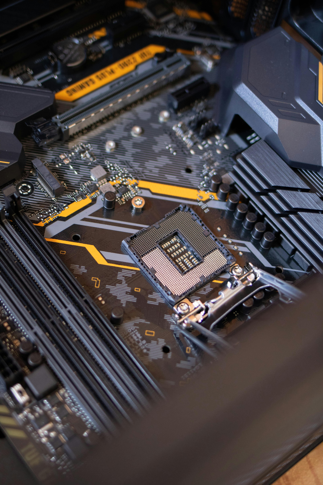
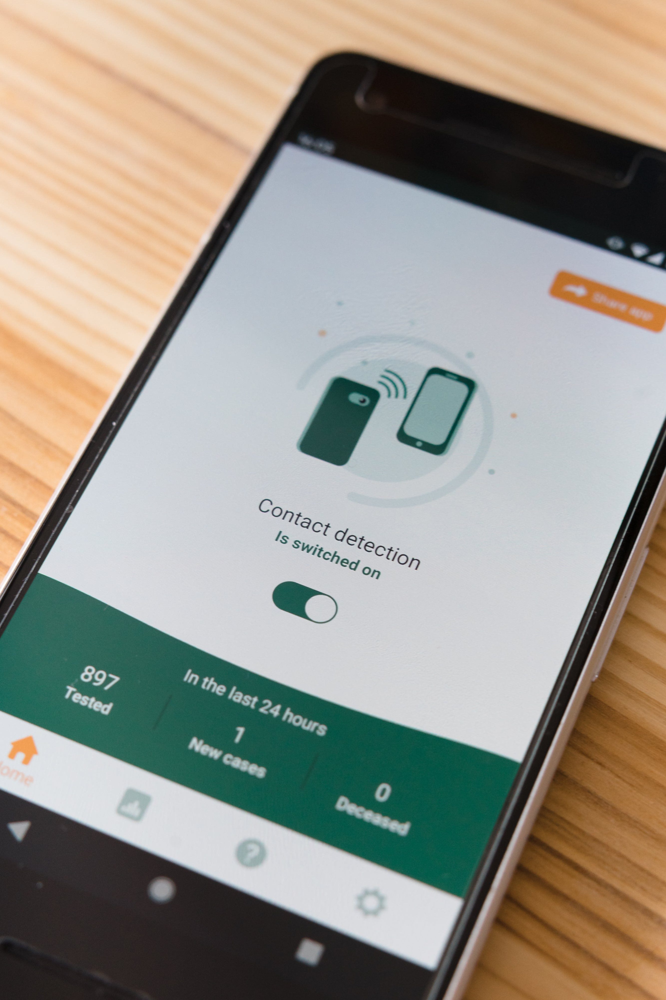

Areas clave de dominio tecnico y operativo.
Competencias tecnicas
Formacion aplicada para programar, mantener equipos, desplegar redes y resolver problemas reales en entornos de TI.
Perfil tecnico rapido
Trabajo practico en laboratorio y proyectos guiados.
Ruta abierta hacia empleo inicial o educacion superior.
Competencias Técnicas

Programación
La programación es el arte de transformar ideas en soluciones digitales. En esta área aprenderás desde los principios de la lógica hasta la construcción de aplicaciones completas. Dominarás el uso de lenguajes como C++, Python y JavaScript, comprendiendo sus estructuras, sintaxis y paradigmas.
Aprenderás también sobre estructuras de datos, algoritmos, buenas prácticas de codificación, depuración y control de versiones con Git. Desarrollarás proyectos prácticos que consolidarán tus habilidades de pensamiento computacional.
- > Diseñar y analizar algoritmos eficientes.
- > Crear programas estructurados y orientados a objetos.
- > Desarrollar aplicaciones funcionales en C++, Python y JavaScript.
- > Usar herramientas como Visual Studio Code y GitHub.
Hardware
El área de hardware te enseñará el funcionamiento físico de los sistemas de cómputo. Conocerás las partes internas de un ordenador, cómo interactúan entre sí y cómo ensamblarlas correctamente.
Aprenderás a identificar fallas comunes, realizar diagnósticos, limpiar y mantener equipos en buen estado, y reemplazar componentes dañados de forma segura.
- Armar y desarmar computadoras personales.
- Identificar y probar componentes electrónicos.
- Aplicar mantenimiento preventivo y correctivo.
- Instalar sistemas operativos después del ensamblaje.


Redes
En redes, aprenderás a conectar computadoras para que puedan compartir información de forma segura y eficiente. Conocerás cómo funcionan los protocolos de comunicación, las direcciones IP y la configuración de routers y switches.
Aprenderás a crear topologías de red, realizar cableado estructurado y asegurar la conectividad en entornos reales usando herramientas como Packet Tracer.
- Crear redes LAN y WAN básicas.
- Configurar routers, switches y puntos de acceso.
- Implementar cableado estructurado.
- Diagnosticar problemas de conectividad.
Software
En esta área aprenderás a usar, instalar y mantener software tanto a nivel de usuario como de administrador. Explorarás herramientas ofimáticas, sistemas operativos y programas especializados para tareas profesionales.
También comprenderás la diferencia entre software libre y propietario, las licencias de uso y la gestión responsable de programas dentro de un entorno laboral.
- Manejar software de ofimática avanzada (Word, Excel, PowerPoint).
- Instalar y configurar sistemas Windows y Linux.
- Administrar software profesional y educativo.
- Gestionar actualizaciones y copias de seguridad.


Soporte Técnico
El soporte técnico se centra en resolver problemas informáticos y asistir a los usuarios. Aprenderás a diagnosticar errores, reparar sistemas, documentar incidencias y brindar atención eficiente tanto presencial como remota.
Además, desarrollarás habilidades blandas como la comunicación efectiva y la paciencia, fundamentales para trabajar con usuarios finales.
- Diagnosticar y resolver fallas de hardware y software.
- Atender solicitudes de soporte de manera profesional.
- Instalar y mantener software esencial para oficinas.
- Documentar reportes de mantenimiento y asistencia técnica.
Nivel esperado por competencia
ProgramacionIntermedio
Hardware y mantenimientoIntermedio
RedesIntermedio
Software y ofimaticaIntermedio alto
Proyectos de practica sugeridos
App de escritorio
- CRUD basico con interfaz.
- Validaciones y reportes simples.
- Entrega documentada.
Red LAN funcional
- Topologia y direccionamiento.
- Router y switch configurados.
- Pruebas de conectividad.
Plan de soporte
- Checklist de mantenimiento.
- Bitacora de incidencias.
- Protocolo de atencion al usuario.
Preguntas frecuentes
Se trabajan IDEs, suites ofimaticas, simuladores de red y sistemas operativos reales.
No. El peso fuerte esta en practica guiada, proyectos y solucion de casos.
Si, puedes postular a roles iniciales de soporte, mantenimiento, redes o desarrollo junior.